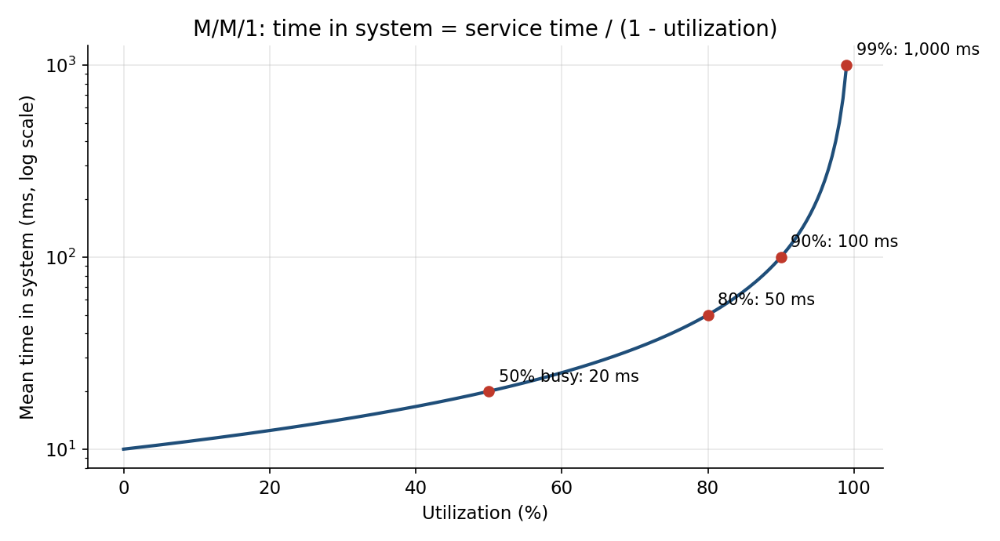
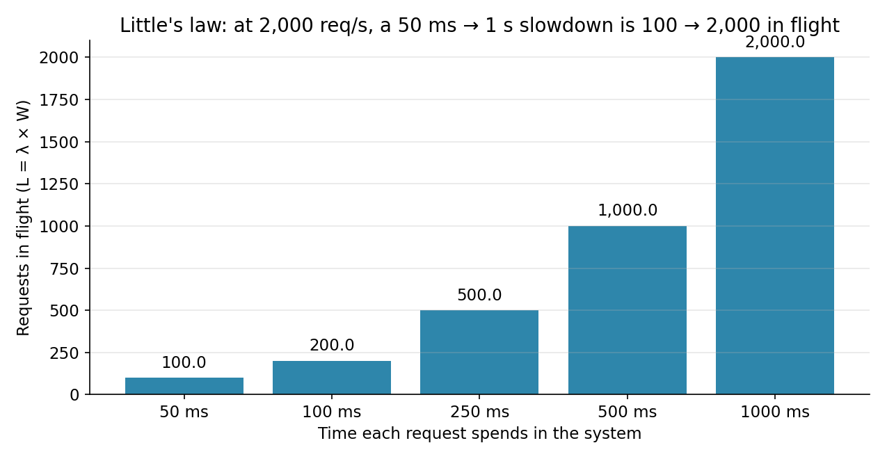
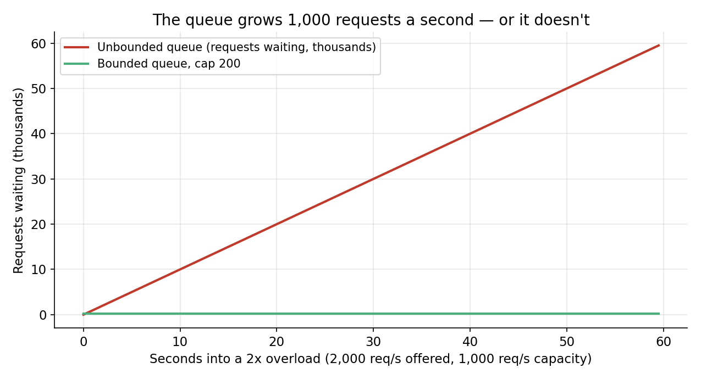
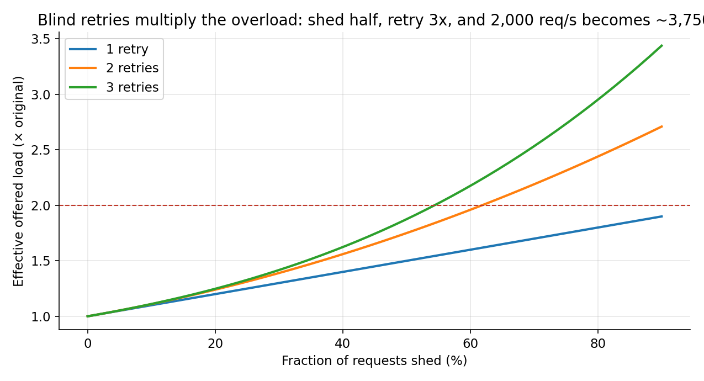

Part 4 gave you the escape hatch for a failed multi-step transaction: undo it, step by step. This part is the escape hatch for a system that is simply getting more work than it can do — and the benchmark hook is a cliff, not a slope. Take one server that handles each request in 10 ms. At 50% busy, the average request spends 20 ms in the system. At 80% busy, 50 ms. At 90%, 100 ms. At 99%, 1,000 ms — a hundred times the service time, for a server that is only 9% busier than the one before it. That is the utilization cliff, and every system you have ever watched melt down under load was standing on it. The fix is not a bigger queue. The fix is deciding, in advance, what happens when the work does not fit — and there are only three answers: make the producer slow down, refuse the excess fast, or let the queue eat you alive.
The ELI5 version
You run a food truck. One cook, one order every 10 seconds, a line out the door. When ten people are in line, the tenth waits 100 seconds — annoying, but fine. When the line grows to a hundred, the hundredth waits 1,000 seconds, and by the time their food is ready they have left, or their lunch break is over, or they have ordered from the truck across the street and now you are cooking a meal nobody wants.
You have three options. Put a sign on the truck — "line closes at 20 people, come back in ten minutes" — that is load shedding: refuse fast, refuse clearly, and let the refused customers decide what to do. Or slow the people joining the line — a host who only lets someone in when the cook has a free hand — that is backpressure: the slowdown signal travels upstream to the producer. Or keep taking orders forever, which is what an unbounded queue does, and which ends with a hundred cold meals and a cook who spent the whole afternoon serving people who already left.
The sign and the host cost almost nothing. The hundred cold meals cost everything.
How it works: the utilization cliff
Two results from queueing theory carry most conversations about overload. The first is the M/M/1 queue: one server, random (Poisson) arrivals, service time S. Utilization ρ is the fraction of time the server is busy. The average time a request spends in the system — waiting plus service — is:
time in system = S / (1 - ρ)

The shape is the whole lesson. Below 80% utilization, the system feels fast and the queue is invisible. Above 90%, every additional point of utilization buys a disproportionate amount of waiting, and the p99 — about 4.6x the mean for an exponential distribution — is where your users actually live. A server at 99% busy with a 10 ms service time has a p99 of 4.6 seconds. Nobody's SLO survives that, and the server is not broken: it is doing exactly what you asked, at exactly the rate you asked.
The second result is Little's law, and it is the one that turns a latency problem into a capacity problem:
items in the system (L) = arrival rate (λ) × time each spends there (W)

At 2,000 requests a second and 50 ms each, 100 requests are in flight. Say a dependency slows to 1 second, at the same arrival rate. Now 2,000 are in flight: twenty times the threads, connections, and memory. The dependency did not fail. It got slower, and Little's law converted that slowness into a capacity demand your thread pools were never sized for. This is how a slow database takes down a web tier that never touches the database's failure mode: the requests pile up in the tier, the tier runs out of threads, and every endpoint on the tier dies — including the ones that never called the slow dependency. The fix for that specific failure is a bulkhead (Part 10 will come back to isolation), but the underlying math is here.
Past 100% utilization neither formula applies, because there is no steady state: the queue grows by arrival rate minus service rate, forever. That is the regime where the next two sections live.
The queue only buys time, never capacity
The first fix is the one most systems lack: a bound. An unbounded queue in front of a slower worker grows without limit, so latency and memory grow without limit too, and the worker spends its time serving requests whose callers have already given up. Every request is accepted, almost none succeed in time. The simulation in the companion notebook makes it concrete: offer 2,000 requests a second to a worker that handles 1,000, with a 2-second client deadline, for 60 seconds.

The unbounded queue serves 2,050 requests in time out of 120,000 offered — and serves another 57,950 too late to matter, each one costing the full price of work for zero value. The bounded queue, capped at 200, serves 60,000 in time and sheds 59,800 instantly. The bounded queue serves nearly thirty times the goodput, because it spends its capacity on work someone still wants instead of work whose deadline expired a minute ago.
The distinction that matters here is throughput vs goodput. Throughput counts completions; goodput counts completions inside the caller's deadline. Under overload, throughput can look fine — the worker is busy, the queue is draining — while goodput collapses to near zero, because everything completes after the client has timed out, retried, and moved on. Measure goodput. Alert on goodput.
Size the bound from the latency budget, not from memory or a round number. If a request may wait at most W seconds before its total latency breaks the SLO, and the stage drains at rate μ, the queue can hold about μ × W items — Little's law applied to the waiting line. A queue of 200 in front of a worker that drains 1,000 a second means at most 200 ms of waiting. Anything beyond that cap is work that will finish too late to be useful, and refusing it is a kindness: a fast, explicit rejection costs almost nothing, while accepting it and answering late costs everyone.
Watch for hidden unbounded queues, because they are everywhere: socket backlogs, thread-pool queues, asyncio.Queue with no maxsize, broker prefetch with no limit, a retry loop with no cap. The queue you did not bound is the one that kills you.
Backpressure: push "slow down" upstream
Backpressure is the general idea of pushing the slowdown signal upstream instead of buffering. TCP and HTTP/2 flow control do it at the transport level; a broker consumer that pulls messages only when it has capacity does it at the application level; a bounded queue that rejects when full does it bluntly. The opposite — a component that accepts everything and buffers it — hides overload from the producers who could do something about it.
The mechanisms, from cheapest to most involved:
- Bounded queue with rejection. The blunt instrument, and the right default. When the queue is full, the producer gets an immediate error instead of a silent buffer. Works everywhere, costs nothing.
- Pull-based consumption. The consumer requests work only when it has capacity — Kafka consumer groups, gRPC streaming with flow control, reactive streams. The producer cannot outrun the consumer because the consumer sets the pace.
- Concurrency limits. Cap the number of requests in flight, not just the queue. Netflix's concurrency-limits library made this famous: an adaptive limit (AIMD, or a gradient algorithm in the Vegas style) that grows when latency is flat and shrinks when latency rises. The limit is the backpressure — excess requests are rejected at the door instead of queueing inside.
- Explicit signals.
Retry-Afterheaders, gRPCRESOURCE_EXHAUSTED, or a load signal in the response body. The signal is only useful if the producer honors it, which is why the next section matters.
Backpressure only works when the producer can slow down. An internal pipeline stage can wait. A human clicking refresh cannot be told to wait — for them, shedding is the answer. Choose by asking who is upstream and whether they can do anything with the signal.
Load shedding: choose what to lose
Load shedding is the deliberate refusal of work the system cannot finish in time, so the work it does accept still meets its latency target. It is a feedback loop with four parts: a saturation signal (queue depth, in-flight count, latency — something that rises before latency collapses), a limit (static, or adaptive from latency measurements), a per-request decision at admission, and a cheap, clear response: HTTP 429 or 503 with Retry-After, or gRPC RESOURCE_EXHAUSTED / UNAVAILABLE.
Shedding needs a priority rule. Not all requests are equal: health checks and payments outrank thumbnails and analytics. Shed the least valuable first, and shed it at the cheapest layer — an edge proxy or load balancer sheds before the service parses anything; the service's admission control caps its own concurrency; per-dependency bulkheads keep one slow downstream from consuming every thread. Each layer protects the one behind it.
And every queued item needs a deadline. A consumer that dequeues an item already past its deadline should drop it rather than process dead work — the bounded-queue simulation above is exactly this: the 57,950 requests served too late were work performed for nobody.
Why it breaks: the retry storm
Shedding has one failure mode that turns the cure into a second disease: retries. If rejected clients retry immediately, shedding multiplies the arrival rate instead of reducing it. The arithmetic is unforgiving:

Offer 2,000 requests a second, shed half of them, and let every rejected client retry three times with no backoff: the effective offered load becomes ~3,750 requests a second — nearly double the original overload, aimed at a system that was already shedding. Each retry round adds another wave, and the system that was shedding 50% is now shedding more, which triggers more retries. This is a retry storm, and it is how a ten-minute overload becomes a two-hour outage: the overload ends, but the retry backlog keeps the system saturated long after the original traffic spike is gone.
The fixes are part of the shedding design, not an afterthought:
- Exponential backoff with jitter. Each retry waits longer than the last (0.1 s, 0.2 s, 0.4 s…), and jitter randomizes the wait so a thousand clients do not retry in the same millisecond. Jitter is the difference between a spread-out recovery and a synchronized second spike.
Retry-After. The server tells the client when to come back, and the client obeys it. A 503 withoutRetry-Afteris a shrug; with it, it is a schedule.- Retry budgets. Cap retries as a fraction of normal traffic — say, retries may add at most 10% on top of the base rate — and drop retries first when the budget is exhausted. The retry budget is itself a shedding policy, applied to the second wave.
- Idempotency. Retries that do land must be safe to run twice, or the storm corrupts data as well as saturating capacity. (Part 4's outbox rule — deduplicate on the event ID — is the same idea at the message layer.)
The pattern that makes overload outlast its cause is worth naming: metastable failure. The system has two stable states — healthy, and saturated by its own retries — and once it tips into the second, removing the original trigger does not bring it back. The only way out is to shed the retries too, or to drain the retry backlog deliberately. If your runbook for an overload incident does not mention retries, it is incomplete.
The decision ladder
- Bound every queue, from the latency budget. Cap = drain rate × max wait. An unbounded queue is not a design choice; it is a missing decision.
- Measure goodput, not throughput. Completions inside the deadline are the only number that matters under load.
- Shed at the cheapest layer, with a priority rule. Edge first, then admission control, then per-dependency bulkheads. Payments before thumbnails.
- Backpressure where the producer can wait; shedding where it cannot. Internal stages get a slowdown signal; external clients get a fast 429/503 with
Retry-After. - Design retries as part of shedding. Backoff, jitter,
Retry-After, retry budgets — or your shed load comes back multiplied.
Why it breaks
The unbounded queue is the failure that ships. Every system has a queue somewhere that nobody bounded, because bounding it felt like admitting the system could not keep up. It cannot keep up — that is the premise of the whole part. The queue that is not bounded is the one that converts a ten-second traffic spike into a ten-minute latency collapse, serves 57,950 requests too late to matter, and then, through blind retries, keeps itself saturated after the spike is gone. Bound the queue, shed fast, and let the work you accept be work someone still wants. The next part — vector clocks and causality — moves from how much work the system can take to what order it happened in, which is the question that decides whether two replicas can ever agree.
Takeaways
- The utilization cliff is exact: time in system = S / (1 − ρ). At 90% busy you wait 10x the service time; at 99%, 100x. Keep steady-state utilization below ~80%.
- Little's law (L = λ × W) turns a latency problem into a capacity problem: a 20x slower dependency is 20x the in-flight requests at the same arrival rate.
- A queue buys time, never capacity. Size it from the latency budget (cap = drain rate × max wait) and measure goodput — completions inside the deadline — not throughput.
- Blind retries multiply overload: shed half with 3 retries and 2,000 req/s becomes ~3,750. Backoff, jitter,
Retry-After, and retry budgets are part of the shedding design.
Honesty note: all simulation numbers are this machine's toy-model measurements, not production telemetry; the M/M/1 and Little's-law figures are textbook queueing theory. No Meta content, per standing exclusion.
Companion notebook: backpressure_load_shedding.ipynb — the utilization cliff, Little's law, the bounded-vs-unbounded simulation, and the retry-storm multiplier. All cells exec-tested.
Next in the series: Season 2, Part 6 — Vector Clocks & Causality. Follow danielsamfdo on dev.to for the next part.